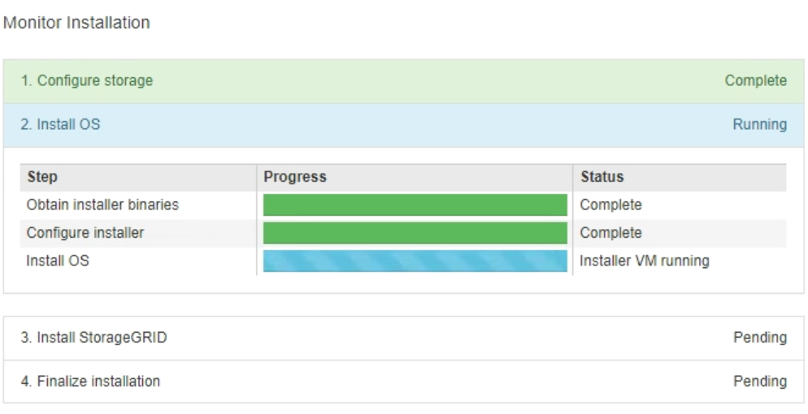
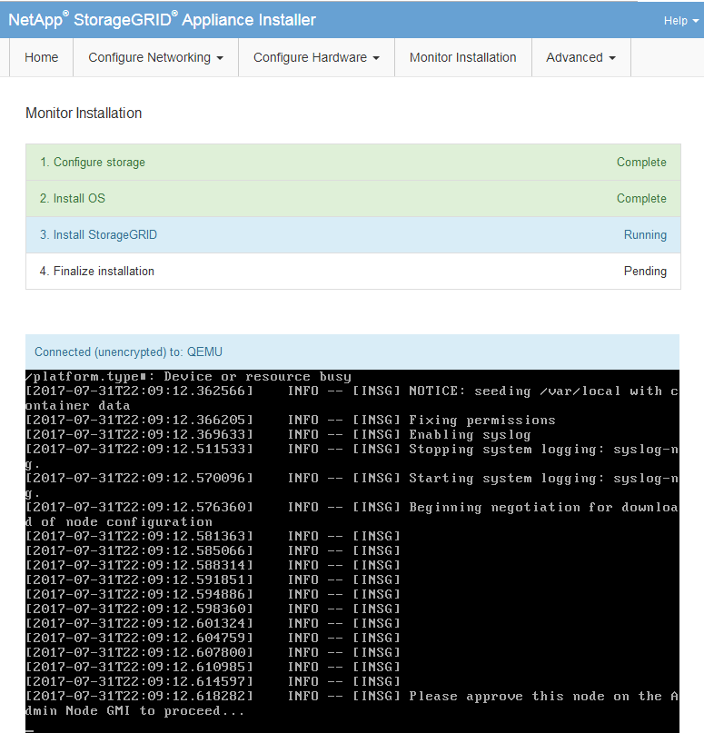
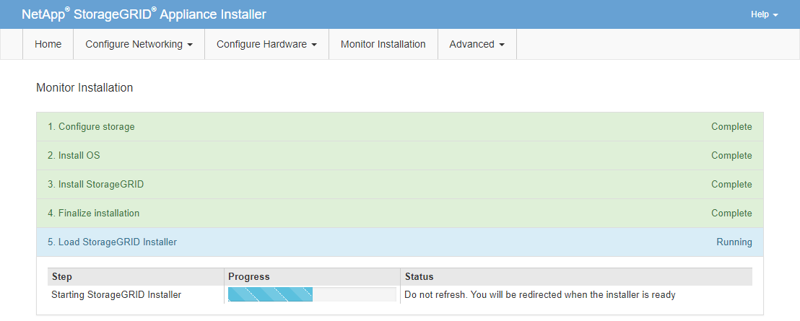

はじめに
はじめに
サービスアプライアンスのインストールの監視
 変更を提案
変更を提案-
 このドキュメント ページのPDF
このドキュメント ページのPDF
-
ソフトウェアをインストールしてアップグレードする
-
構成と管理
-
PDF版ドキュメントのセット
Creating your file...
StorageGRID アプライアンスインストーラでは、インストールが完了するまでステータスが提供されます。ソフトウェアのインストールが完了すると、アプライアンスがリブートされます。
-
インストールの進行状況を監視するには、メニューバーの * インストールの監視 * をクリックします。
Monitor Installation ページにインストールの進行状況が表示されます。

青色のステータスバーは、現在進行中のタスクを示します。緑のステータスバーは、正常に完了したタスクを示します。

インストーラは、以前のインストールで完了したタスクが再実行されないようにします。インストールを再実行している場合 ' 再実行する必要のないタスクは ' 緑色のステータスバーとステータスが [ スキップ済み ] と表示されます -
インストールの最初の 2 つのステージの進行状況を確認します。
-
* 1 。ストレージの構成 *
インストーラが既存の設定をすべてドライブから消去し、ホストを設定します。
-
※ 2OS * をインストールします
インストーラが StorageGRID のベースとなるオペレーティングシステムイメージをプライマリ管理ノードからアプライアンスにコピーするか、ベースとなるオペレーティングシステムイメージをプライマリ管理ノードのインストールパッケージからインストールします。
-
-
次のいずれかが実行されるまで、インストールの進行状況を監視します。
-
アプライアンスゲートウェイノードまたは非プライマリアプライアンス管理ノードの場合、 * Install StorageGRID * ステージが一時停止し、組み込みのコンソールにメッセージが表示されて、グリッドマネージャを使用して管理ノードでこのノードを承認するように求められます。

-
アプライアンスプライマリ管理ノードの場合、第 5 フェーズ（ Load StorageGRID Installer ）が表示されます。5 つ目のフェーズが 10 分以上たっても完了しない場合は、ページを手動で更新してください。

-
-
リカバリするアプライアンスグリッドノードのタイプに応じて、次のリカバリプロセスステップに進みます。
リカバリのタイプ 参照 ゲートウェイノード
非プライマリ管理ノード
プライマリ管理ノード